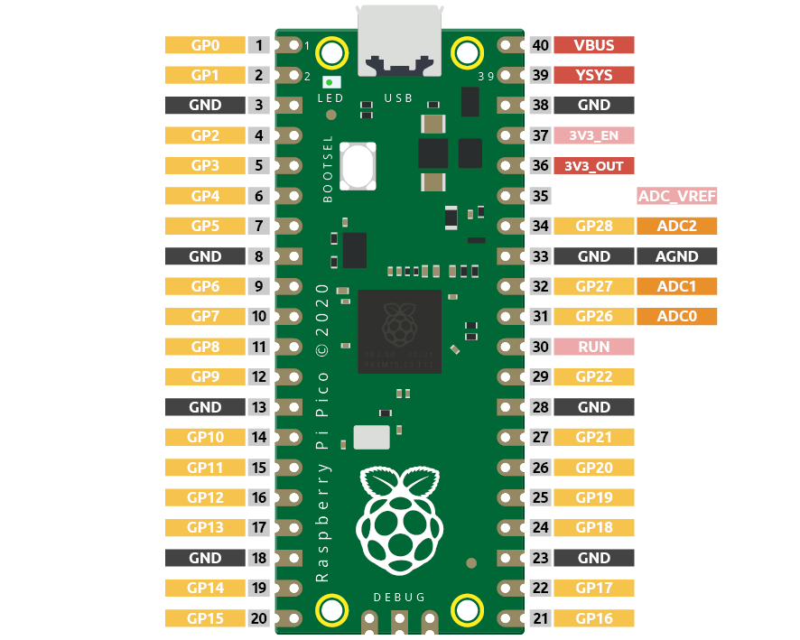
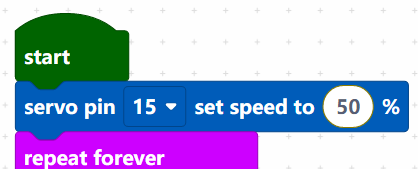
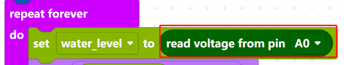
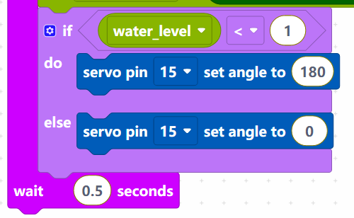

Note
Hello, welcome to the SunFounder Raspberry Pi & Arduino & ESP32 Enthusiasts Community on Facebook! Dive deeper into Raspberry Pi, Arduino, and ESP32 with fellow enthusiasts.
Why Join?
Expert Support: Solve post-sale issues and technical challenges with help from our community and team.
Learn & Share: Exchange tips and tutorials to enhance your skills.
Exclusive Previews: Get early access to new product announcements and sneak peeks.
Special Discounts: Enjoy exclusive discounts on our newest products.
Festive Promotions and Giveaways: Take part in giveaways and holiday promotions.
👉 Ready to explore and create with us? Click [here] and join today!
2.6 Smart Water Tank¶
In this project, we use a water level sensor module and a servo to simulate a smart water tank. The water level sensor is fixed inside the tank to measure the water level, and when the water level is below a threshold, the valve controlled by the servo is allowed to open to let water in.
Wiring

Pico has three GPIO pins that can use analog input, GP26, GP27, GP28. That is, analog channels 0, 1, and 2. In addition, there is a fourth analog channel, which is connected to the built-in temperature sensor and will not be introduced here.
{kind=link}
S of water level sensor is connected to GP26(A0), + to VBUS, - pin to GND.
The orange wire (signal) of the servo is connected to GP15, the red wire (power) is connected to VBUS, and the brown wire (ground) is connected to GND.
Code
Note
You can refer to the image below to write code by dragging and dropping.
Import
2.6_water_tank.pngfrom the path ofeuler-kit\piper. For detailed tutorials, please refer to Import the Code.
{kind=link}
After connecting Pico, click the Start button and the code starts to run. When the water level is lower than 1/3 of the water level sensor, the servo rotates to 180 degrees to simulate the inlet opening; when the water level is higher than 1/3 of the water level sensor, the servo rotates to 0 degrees to imitate the inlet closing.
How it Works?

Set the rotation speed of pin15 (servo) to 15%.
[servo pin() set speed to ()%]：Used to set the rotation speed of the servo pin, the range is 0%~100%.

Reads the value of pin A0 and stores it in the variable [water_level].
[set (water_level) to]: Used to set the value of the variable, you need to create the variable from the Variables palette.
[read voltage from pin ()]: Used to read the voltage of the analog pins (A0~A2), the range is 0 ~ 3.3V.

Set the voltage threshold to 1. When the voltage of water level sensor is less than 1, let the servo rotate to 180° position, otherwise rotate to 0° position.
[servo pin () set angle to ()]: Set the angle of servo pin to, the range is 0 ~ 180°.